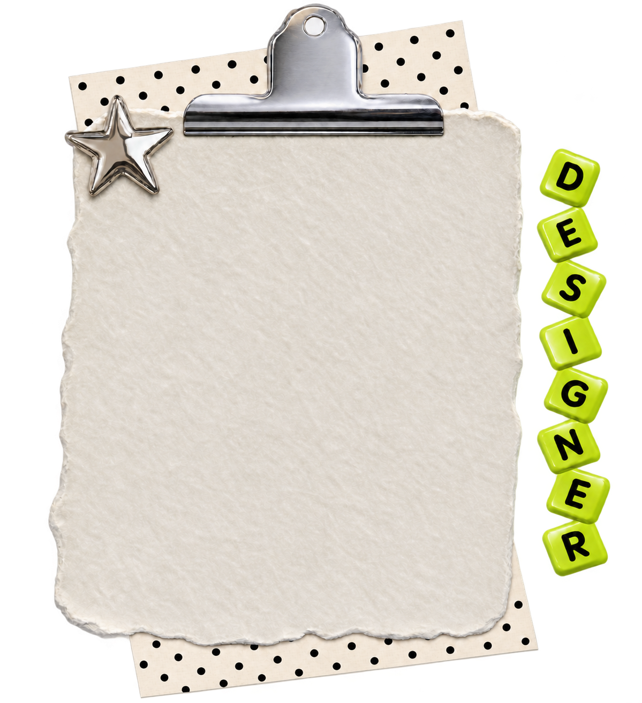
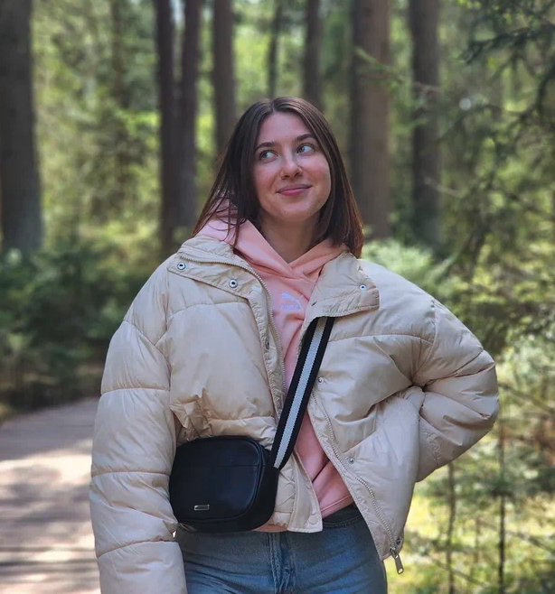
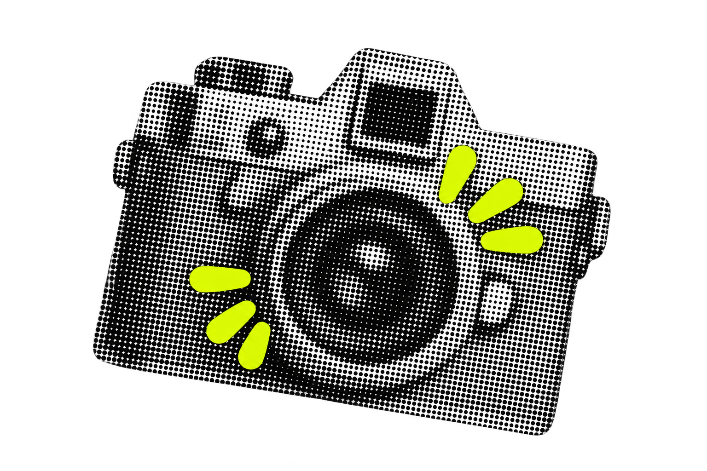
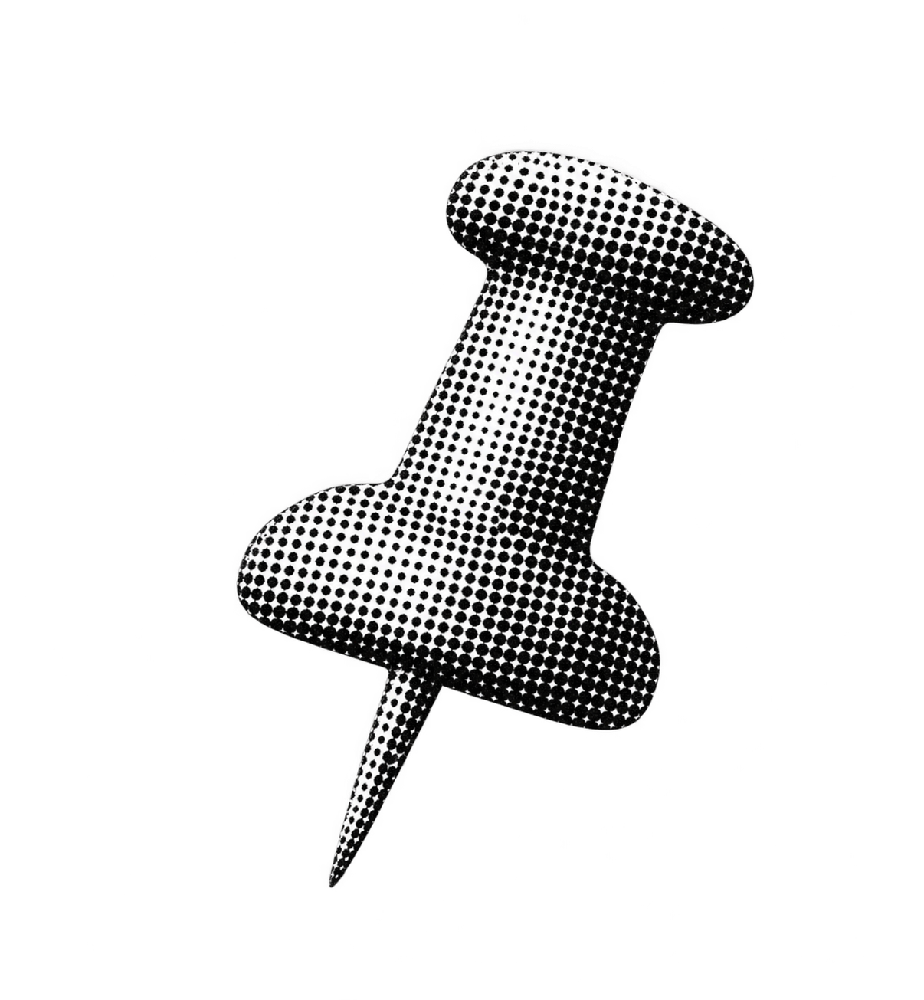
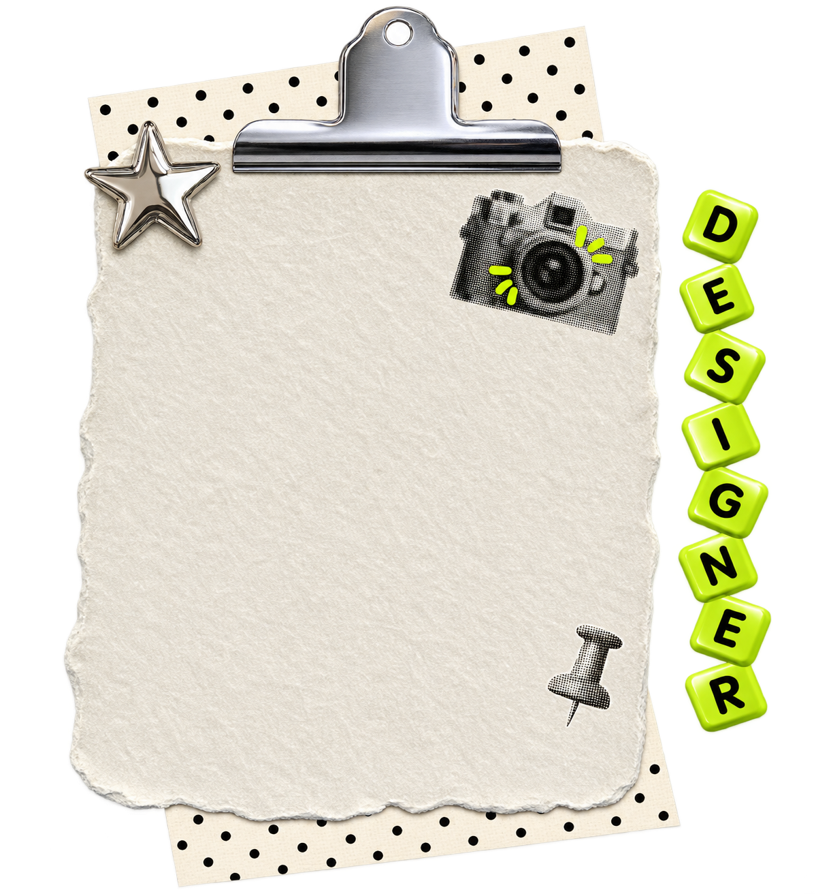

GRAPHIC & WEBDESIGNER
Полина Жарикова
Превращаю задачи бизнеса в визуальные решения,
которые доносят смыслы, привлекают внимание
и помогают достигать целей.
Услуги
От первой идеи до готового макета.
Презентации
Разрабатываю презентации с продуманной структурой и выразительным визуалом. Превращаю сложную информацию в понятную и убедительную подачу.
- Для бизнеса
- Выступления
- Обучение
SMM-дизайн
Создаю целостный визуальный стиль для социальных сетей. Разрабатываю дизайн, который выделяет бренд и делает контент узнаваемым.
- Посты
- Карусели
- Афиши
Айдентика и полиграфия
Разрабатываю визуальную идентичность бренда и адаптирую её для цифровых и печатных носителей. От фирменного стиля до готовых макетов для производства.
- Полиграфия
- Мерч
- Подготовка к печати
Веб-дизайн
Проектирую современные и удобные сайты, объединяя эстетику, логику и задачи бизнеса. Продумываю пользовательский путь и адаптацию под разные устройства.
- Лендинги
- UX/UI
- Адаптивный дизайн
Расскажи о задаче — обсудим формат, объём и сроки.
Обсудить проектпортфолио
Презентации
Превращаю сложную информацию в понятные и визуально выразительные презентации, которые удерживают внимание и помогают донести главное.
портфолио
Печатная продукция
портфолио
Сайты
От первого впечатления до целевого действия — продумываю каждый этап взаимодействия с сайтом.





Обо мне
Я Полина, графический дизайнер. Два года работала в штате и параллельно вела фриланс-проекты. Помогаю компаниям оформлять идеи для выступлений, общения с аудиторией и продвижения продуктов. Сама разрабатываю визуальную концепцию и довожу её до готовых материалов. Работаю онлайн с клиентами по всей России.


портфолио
SMM